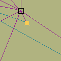
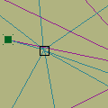

Slicer. version beta 0.1.1 (This is an old version of slicer for the one go to software section)
|
||||||
Description
Slicer allows you to create rhythms and textures from any sound you like.
Import your sound and move the nodes. Slicer will chop your sound into
8 slices and superpose them. The slices will be created and manipulated
acording to some variables that you can control with the control nodes
(the ones represented by a square).

The grain nodes (in color) control volume and pan of each slice, while
the control nodes control pitch, lenght, shift and starting point of the
whole system.